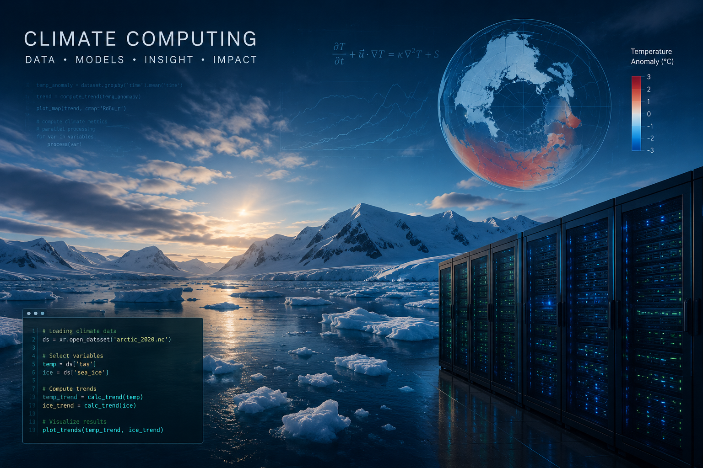
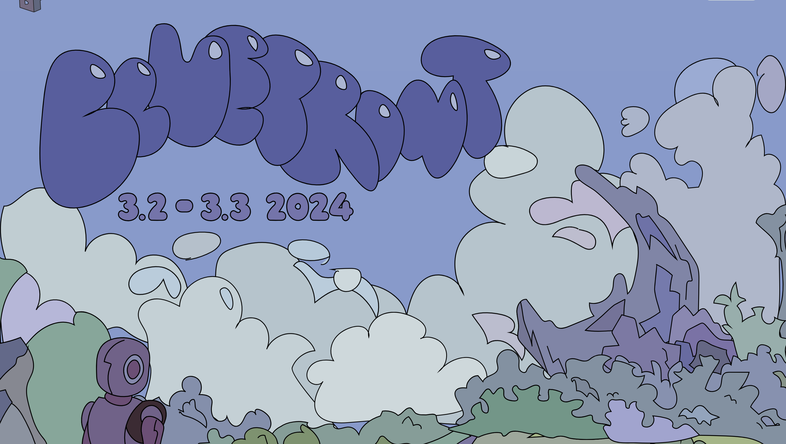
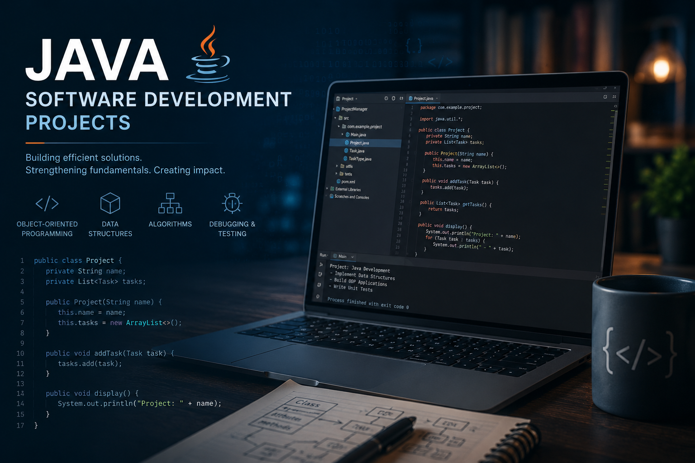
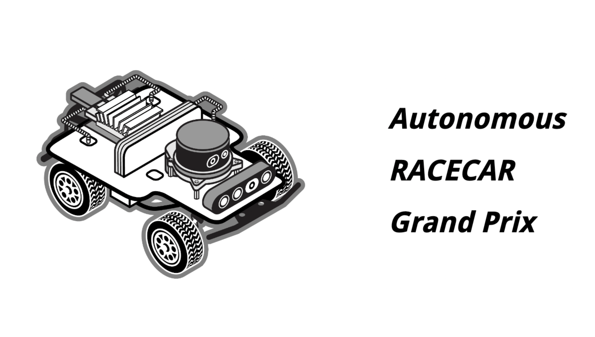
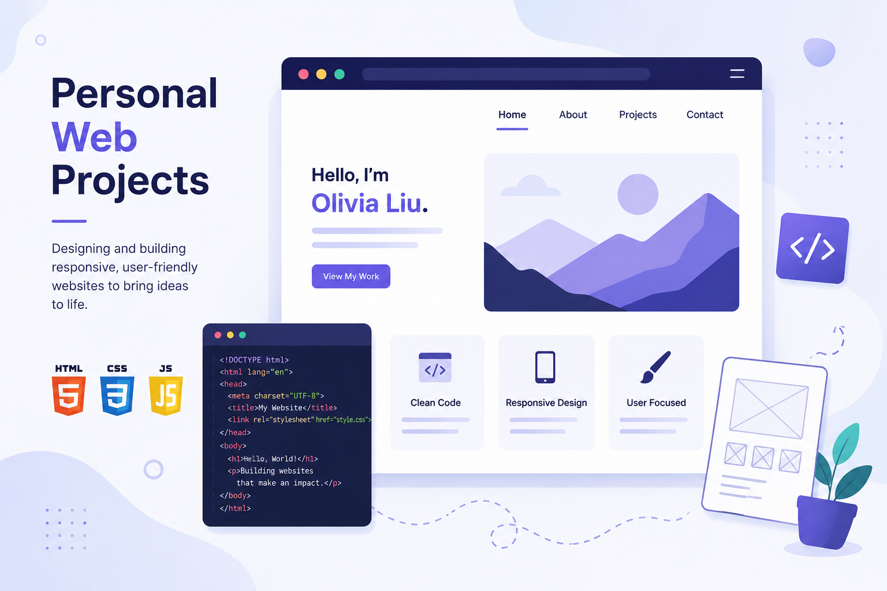

Projects
A collection of projects and research experiences.

Climate Computing Research
Participated in the UMD FIRE Climate Computing research program, where I explored how computational methods can be used to investigate complex climate systems. Working with large-scale datasets, ... scientific models, and high-performance computing resources strengthened both my technical skills and my interest in research, ultimately motivating my pursuit of future graduate studies.
August 2025 - Current Undergraduate Researcher

MIT Blueprint Hackathon
Participated in MIT Blueprint 2024, a weekend-long learnathon and hackathon hosted by MIT. Collaborated with a team to design and develop a software project from concept to implementation while applying ... programming, problem-solving, and teamwork skills in a fast-paced environment. The experience strengthened my interest in software development and exposed me to collaborative project building and rapid prototyping.
November 2024

Java Software Development Projects
Developed a variety of Java applications focused on object-oriented programming, data structures, and algorithmic problem solving. Through these projects, I gained experience designing scalable software systems ... , implementing custom data structures, debugging complex programs, and applying software engineering principles to build efficient and maintainable solutions.
2025 Fall - 2026 Summer

MIT Beaver Works Institute – Autonomous RACECAR
Selected for MIT Beaver Works Summer Institute's Autonomous RACECAR program, an intensive project-based experience focused on autonomous vehicle technologies. Through simulation-based ... development and team collaboration, I explored topics including computer vision, control systems, localization, and path planning while designing algorithms for autonomous navigation in dynamic environments.
November 2024

Personal Portfolio & Web Development Projects
Designed and developed responsive websites using HTML, CSS, and JavaScript, including a personal portfolio website and custom websites for friends. These projects strengthened my skills in front-end development, user-centered ... design, and creating intuitive, visually appealing web experiences.